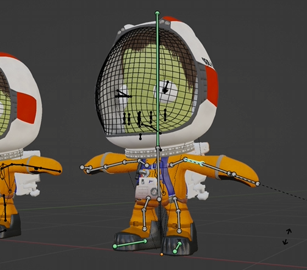
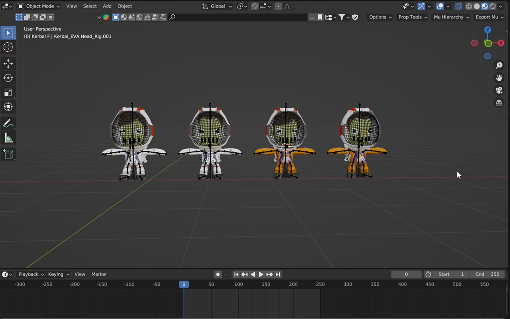

Step 4 - Using Kerbal Character Rigs
Overview
To bring life to your scenes and animations, you can add Kerbal character rigs to your project.
These rigs allow you to pose and animate Kerbals with fully controllable bodies, faces, and
equipment.
The rigs used in this tutorial were originally created by Peter Edwardson on the Kerbal Space
Program forums. Because they were created independently from the game, they are free to
download and share.
The versions provided in this tutorial have also been modified to include additional features such
as improved facial controls and alternate suit colors.
Downloading the Kerbal Rigs
Getting the Rig Files
Before using the Kerbal characters in Blender, you will need to download the rig files.
The rigs are available through the download link provided with this tutorial. Two versions of
the rig are included.
Download the files and save them somewhere easy to access on your computer. You will import
or append these rigs into your Blender project later when setting up your scene.
Image Placeholder

Large screenshot showing:
- Download page or file folder containing the rigs
Features of the Kerbal Rigs/h4>
What the Rigs Include
These rigs are designed specifically for animation and include several built-in features that
make posing and animating Kerbals easier.
Some of the included features are:
- Fully rigged bodies for posing and movement
- Facial controls for expressions and animation
- Jetpack rigs for EVA-style scenes
- Suit variations, including the classic orange Kerbal suit
- Additional controls such as eyelids for more expressive characters

Large screenshot showing:- Kerbal rig controls
- Armature visible in Blender
Modified Versions Used in This Tutorial
Additional Improvements
The rigs used in this tutorial are slightly modified versions of the originals.
The changes include:
- Improved eyelid controls
- Alternate suit color variants
- Minor adjustments to make animation easier

Using Kerbal Rigs in Your Animations
Preparing for Animation
Once downloaded, the Kerbal rigs can be added to your Blender project alongside your imported spacecraft.
Using these rigs, you can:
- Pose Kerbals inside or outside ships
- Animate EVA scenes
- Create cinematic moments involving characters

Result
At this point in the tutorial you should now have:
- Imported ships and parts from Kerbal Space Program
- Cleaned and organized your craft models
- Adjusted textures and materials
- Downloaded Kerbal animation rigs